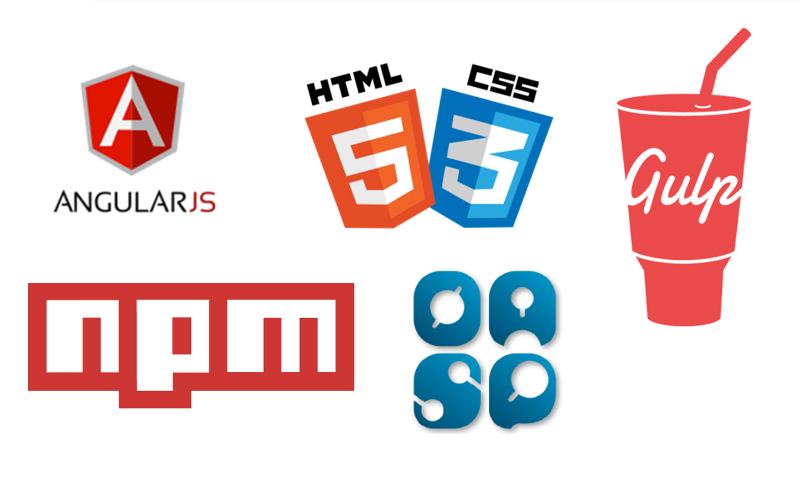

Jak szybko i łatwo
zaliczyć projekt
z WEB-ówki
Adam Puchalski / Jakub Karbowiak
Plan prezentacji
- O nas
- Jak zacząć?
- Na jakie technologie się zdecydować
- OASP jako środek zaradczy
- Przykładowa aplikacja z użyciem OASP
- OASP a projekty studenckie
- Pytania
Projekt informatyczny
z perspektywy studenta
- Cel projektu: zaliczyć
- Budżet: ograniczony
- Czas na realizację: przeważnie brak lub bardzo ograniczony
Pierwsze kroki?
- Czy ktoś już kiedyś zaliczył ten kurs?
- Czy są jakieś gotowe rozwiązania?
- Z czego skorzystać?
- Jak zminimalizować nakład pracy potrzebny do zrealizowania projektu?
W przypadku profesjonalnych projektów
- Czy robiliśmy już coś podobnego?
- Jak rozwiązaliśmy standardowe problemy?
- Czy mamy doświadczenie?
- Jak szybko wystartować?
- Jak szybko przygotować techniczne podstawy do implementacji biznesowych wymagań?
Najważniejsze pytania
Jakie technologie wybrać?
Jak poskładać wszystko w jedną całość?
OASP
Open Application Standard Platform
http://oasp.github.io/
OASP
- JAVA + JS
- Platforma do rozwijania aplikacji webowych
- Referencyjna implementacja projektu
- Single Page Application
- Kompozycja frameworków
- IDE
Aplikacja webowa
=
klient + serwer
Technologie
Backend

Frontend
Komunikacja między frontendem i backendem
Hello World!
Backend
http://start.spring.io
public static void main
Frontend
npm install -g yo
npm install -g generator-oasp
yo oasp
http://www.capgeminisoftware.pl/
IT Survival